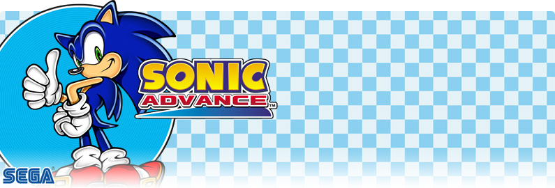
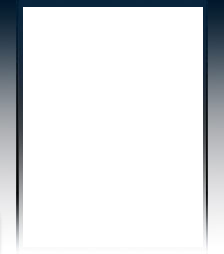
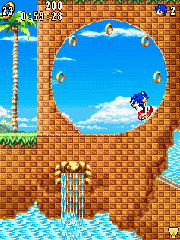

Sonic Advance
Introduction
Sonic Advance is a 2D platforming game.
Take control of Sonic by running through stages, collecting rings, attacking enemies and stop Dr. Eggman's plans.
| Date |
2011 (J2ME)
2012 (BlackBerry)
2014 (Android) |
| Platforms |
J2ME, BlackBerry, Android |
| Abandonware |
Yes |
Short versions
The short versions only have 2 zones (Neo Green Hill Zone and Secret Base Zone) and a boss stage.
All stages are selectable from the start.
Although the Egg Press appears as a boss, the Egg Hammer Tank is absent.
In terms of controls, the Spin Attack, Air Dash and Somersault are absent.
The Spin Dash can be performed by pressing the center key or [5] on the number pad.
In terms of music, only the Neo Green Hill Zone music is present during stages.
Medium versions
The medium verions are nearly identical to the short versions, but they have an additional zone (Angel Island Zone).
Additionally, each zone has their own music track.
Strangely enough, Secret Base Zone has the Casino Paradise music playing.
However, the SonyEricsson W810i and 240x320 versions look, function and play like the long versions, despite being a medium version.
This is the only medium version where you can use the Spin Attack and Air Dash.
It is also the only medium version where the difficulty setting is present and you have to unlock each stage.
Additionally, the Egg Press boss battle appears at the end of Angel Island Act 2, instead of its own dedicated stage.
Long versions
The long versions resemble more the original GBA game in terms of gameplay and graphics.
The Spin Attack and Air Dash are present.
The difficulty settings is also present, but its functionality is different.
When set to EASY, the game removes all badniks in the stages.
Some versions may lack certain sound effects or both the music and sound effects can't be played at the same time.
The 640x360 versions have upscaled Sonic sprites.
These versions contain 4 zones, but the zone order is different from most other versions of Sonic Advance.
The zone order goes like this:
- Zone 1: Neo Green Hill Zone
- Zone 2: Secret Base Zone
- Zone 3: Angel Island Zone
- Zone 4: Casino Paradise Zone
The versions with touchscreen controls have a virtual pad, with the arrows act like the number pad, and the attack button performs the somersault and slide.
A Polish and a Chinese version were also released.
The Chinese version was released by China Mobile and MBIT.
This version replaced the simple command of the Spin Dash by holding down [8] on the number pad and then press [5] or the center key.
Additionally, the somersault and slide have been added by pressing the center key or [5] on the number pad.
Android version
In 2014, Gameloft re-released their version of Sonic Advance on Android.
This port is nearly identical to the 480x800 J2ME version found on certain J2ME phones which support touchscreen functionalities.
This port has 7 languages: English, French, German, Italian, Spanish, Portuguese, Russian and Turkish.
When booting the game for the first time, the game automatically sets the languages based on your device language.
Strangely enough, when getting an extra life, the 1UP jingle is looping until another music track is played.